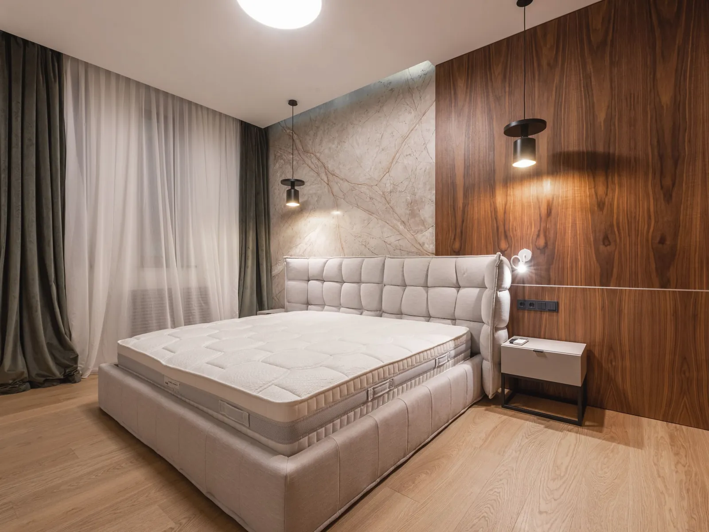
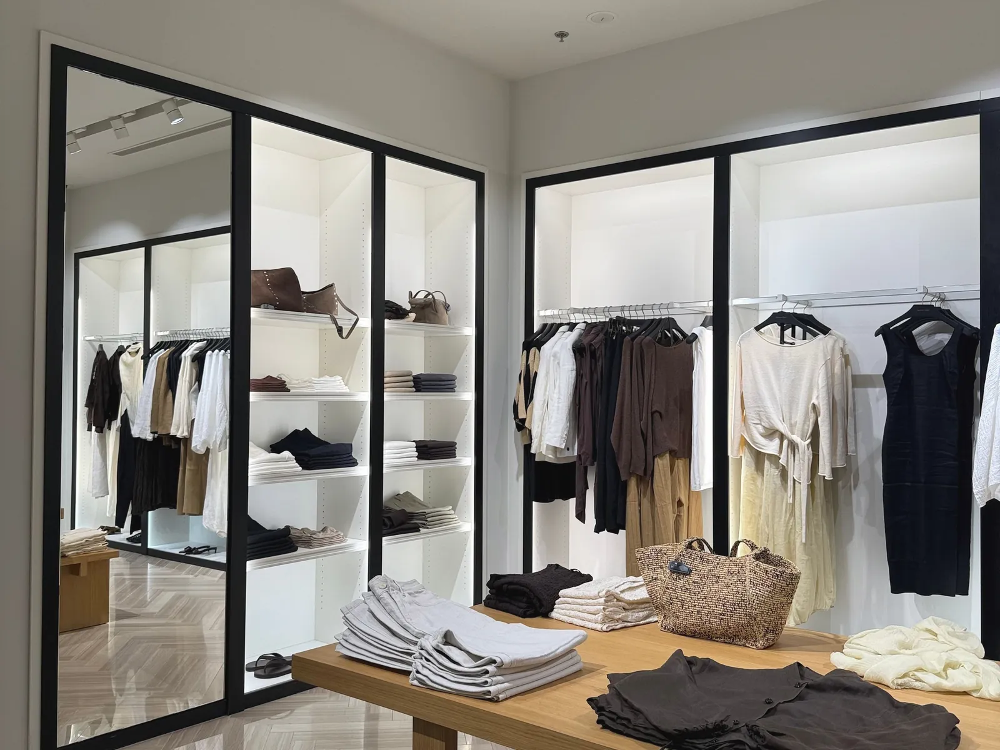
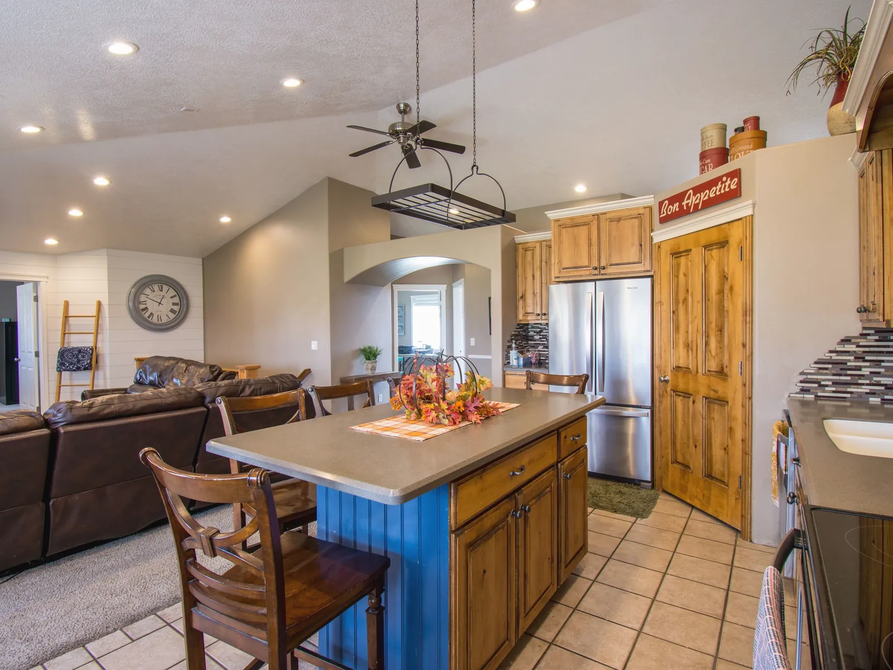
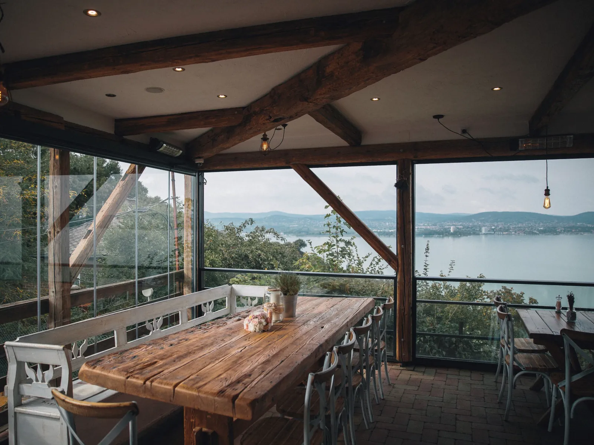

Проекты
Восемь реализованных интерьеров за последние пять лет. Фотоотчёты и планировки присылаем по запросу — часть объектов находится в приватных резиденциях.
-

Квартира на Патриарших
Тихая классика: дуб, лён, брашированный камень, скрытая подсветка.
-

Дом в Сосновке
Панорамная кухня-гостиная, керамика ручной работы, рекуперация.
-

Студия йоги в Хамовниках
Акустические панели, мягкий рассеянный свет, тёплый бетон.
-

Пентхаус на Софийской
Минимум перегородок, максимум вида: две линии окон и общий камень.
-

Дом в Переделкине
Дубовые панели в спальне, латунь, штукатурка с накатом.
-

Бутик на Столешникове
Витрина как продолжение улицы: штукатурка, нержавеющая сталь, лён.
-

Семейная квартира в Раменках
Кухня-столовая на 8 человек, износостойкие поверхности, много хранения.
-

Дом у воды
Терраса как вторая гостиная, панорамное остекление, тёплый камень.
Хотите увидеть больше?
Пришлём полные проекты с планировками, развёртками и сметой — по вашей типологии и площади.
Запросить подборку